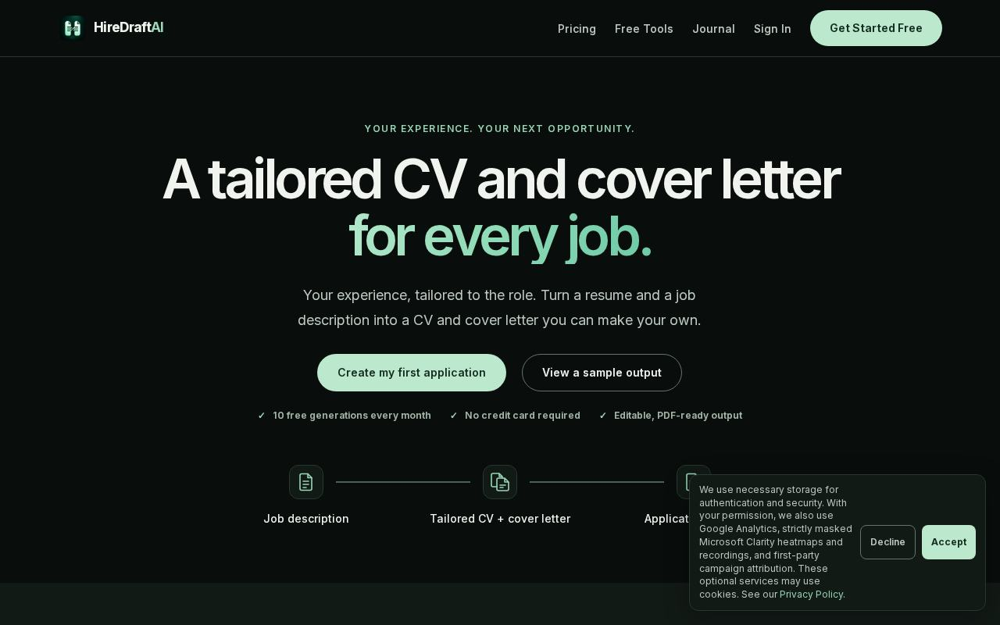

What I did
I designed the application workflow and worked on the frontend, backend integrations, document exports, and release testing. I maintain the live product and review how changes affect the application workflow.

Give applicants a chance to review the draft
The workflow brings the CV, cover letter, and job description together so applicants can review their draft before exporting it. The saved resume provides the source for career claims. Applicants can edit the draft and return to saved work as their application progresses.
What you can inspect
- Public tools ↗ to try the product’s diagnostics without an account.
- Architecture notes ↗ describing the React interface, FastAPI services, and data boundaries.
- Recruiter review guide ↗ covering my role, the product, and what to try in a short demo.